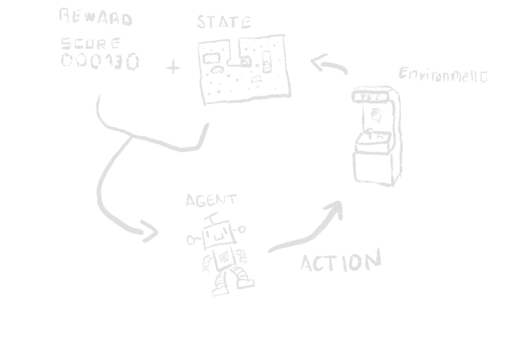

One of the things that has always piqued my interest ever since I was but a wee lad has been artificial intelligence. Teaching inanimate objects in a way that resembles how humans learn is a fascinating prospect, one that sadly is still not quite like our learning process, but you can still spot similarities between both. Thankfully, now that I kinda know my way around a computer, I can have a little taste of that by forcing machines to repeatedly perform actions and see their results ad nauseam until they are able to establish causation between their actions and their consequences. That’s right folks, today we’ll be seeing some Q-Learning in action, and what better way to do it than with the classic arcade game, Dig-Dug.
Introduction - What is Q-Learning?
Let me start by saying that this is not a professionally made experiment, and as such please do not expect state-of-the-art expositions nor think of the following as best practices or anything. Everything conveyed here might be better explained elsewere, but I’ll try my best to explain stuff for people that don’t really get what they’re reading when they look at academic papers on the topic (much like myself). Although before we begin with Q-Learning, we need to understand what reinforcement learning is first.
Reinforcement learning
There are many types of approaches when dealing with machine learning. Most commonly we find in the wild problems related to supervised learning (giving many labeled examples to a machine to later try and predict stuff based on what it saw) and somewhat less commonly unsupervised learning (trying to find patterns in data and structures in it). However, reinforcement learning deals with a different type of situation than those other two types of problems. Suppose we have ourselves an environment, a virtual space where one can do certain actions and interact with it somehow, changing its state and possibly being rewarded for it. For example, let’s say our environment is a nice arcade cabinet with Dig-Dug in it. The state is the frame you see on the screen, and you interact with it using the controls and are rewarded with points for digging and eliminating enemies, easy and intuitive to understand. With RL, we introduce an agent (AKA our machine) that will try to learn what’s the best course of action to maximize our reward in this environment.  Artist’s rendition of how Reinforcement Learning works
Q-Learning
Q-Learning is a reinforcement learning algorithm. Given our previously defined environment, we try to learn what is the reward value of an action for a given state of it and choose what is the better action to get the most reward possible considering what we know. You may think it’s very similar to what I said above, and you’d be right, but explaining the algorithm in detail is not really my goal here. Just know that it’s a way to tackle problems where RL is required.
Defining goals
Avid readers most likely have already inferred what the objective of this small project is, but just make it explicitly clear (which will be important later on), what I want to do is the following: Let a machine learn how to play and win in Dig-Dug.
Of course, this is easier said than done, so in order to start doing something, we need to stablish objectives along the way to achieve our main goal of having a Dig-Dug pro at home. The following is roughly what I think I need to do for this project:
- Develop the Dig-Dug environment for the agent to play around.
- Setup the Q-Learning agent and let it loose in the environment.
- Train and iterate and train and iterate and…
Of course, each of these steps also come with their own problems to solve, but we’ll delve on that when we get to them. Also, a big part of this is that it’s supposed to be a learning experience for myself, and as such I’ll try to do as much as I can from scratch (which means not stealing just adapting other people’s work directly to function with Dig-Dug).
Conclusion
Now that we have a grasp on what to do next, it’s time to start developing! Next part will focus on our first step, getting the DigDuQ environment going. Hope you hop on for the journey ahead!